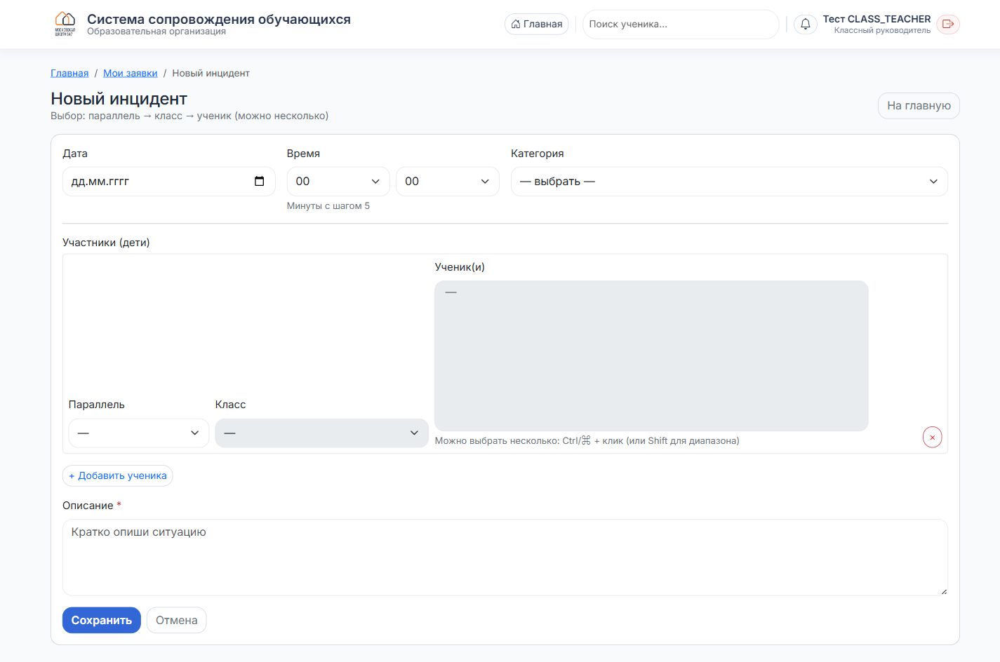
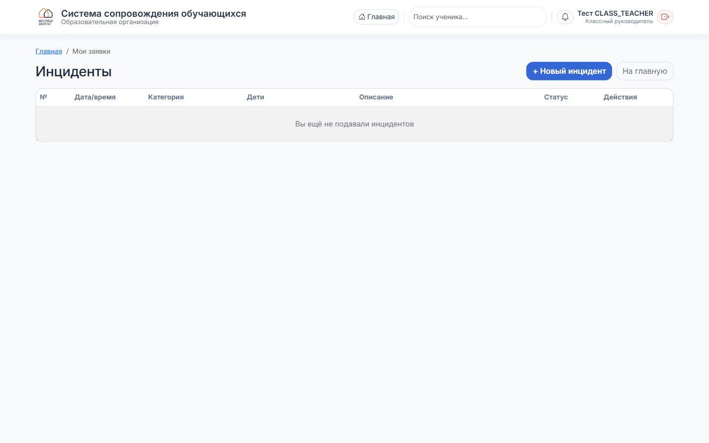

Классный руководитель
Как подать инцидент
Зарегистрировать событие по ученику и отследить его статус.
1
Где кнопка
Два пути:
- На главной — плитка «Добавить инцидент» в блоке «Быстрые действия».
- Из карточки ученика — кнопка «Добавить» в секции «Инциденты».
2
Заполните форму

- Дата и время события.
- Категория: травма, драка, буллинг, нарушение дисциплины и др.
- Параллель → Класс → Ученики. Можно выбрать нескольких: Ctrl + клик или Shift для диапазона.
- Описание — обязательно, кратко и по делу.
Если участники из разных классов — кнопка «+ Добавить ученика» добавит второй блок «Параллель → Класс → Ученики».
3
Сохраните
Нажмите «Сохранить». Система покажет раздел «Мои заявки» — ваш инцидент уже там.
4
Отслеживание статусов — «Мои заявки»

В таблице — все поданные вами инциденты: дата/время, категория, дети, описание, статус (Новый / В работе / Закрыт), действия (редактировать, удалить).
Статус меняет ответственный (администратор, социальный педагог, психолог) по мере работы.
Редактировать свой инцидент можно, пока статус «Новый». После взятия в работу — только через ответственного.